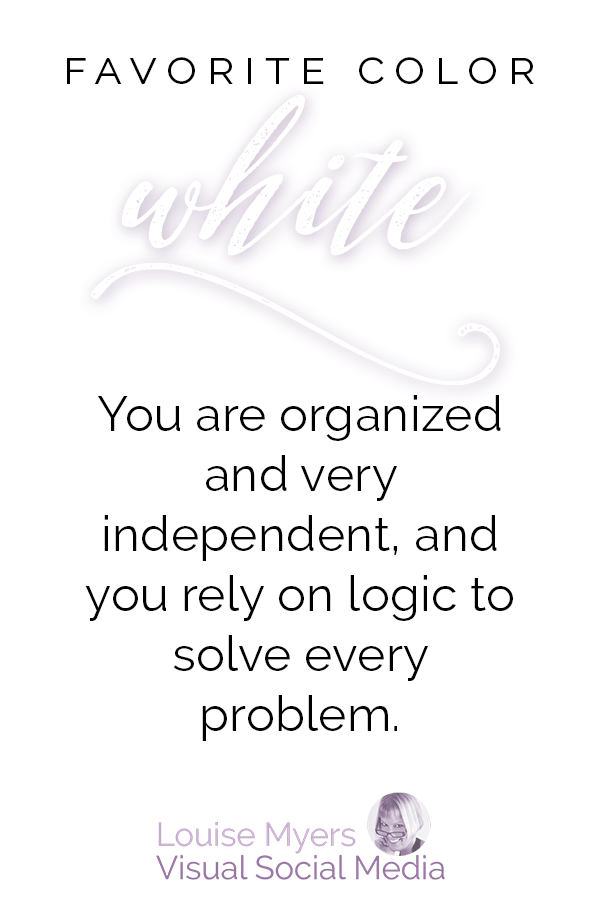

White

You are organized and very independent, and you rely on logic to solve every problem.
You appreciate order and simple elegance.
Your taste is refined, enjoying things that are well crafted and beautiful.
You have a special knack for finding treasures in the most unexpected places.
You are particular and have high expectations for yourself as well as others.
You do not always deal well with disappointment when things do not go as planned.
Your ability to portray a sense of control no matter what may hide your true feelings.
People may misread you as aloof because of your self-confidence and naturally reserved nature.
When people get to know you, they appreciate your mindfulness and wisdom.
You are often described as an old soul.
Favorite color WHITE? You are organized and very independent, and you rely on logic to solve every problem.
BLUE
GREEN
RED
ORANGE
PURPLE
BROWN
BLACK
WHITE
ABOUT ME
PINK
Intro